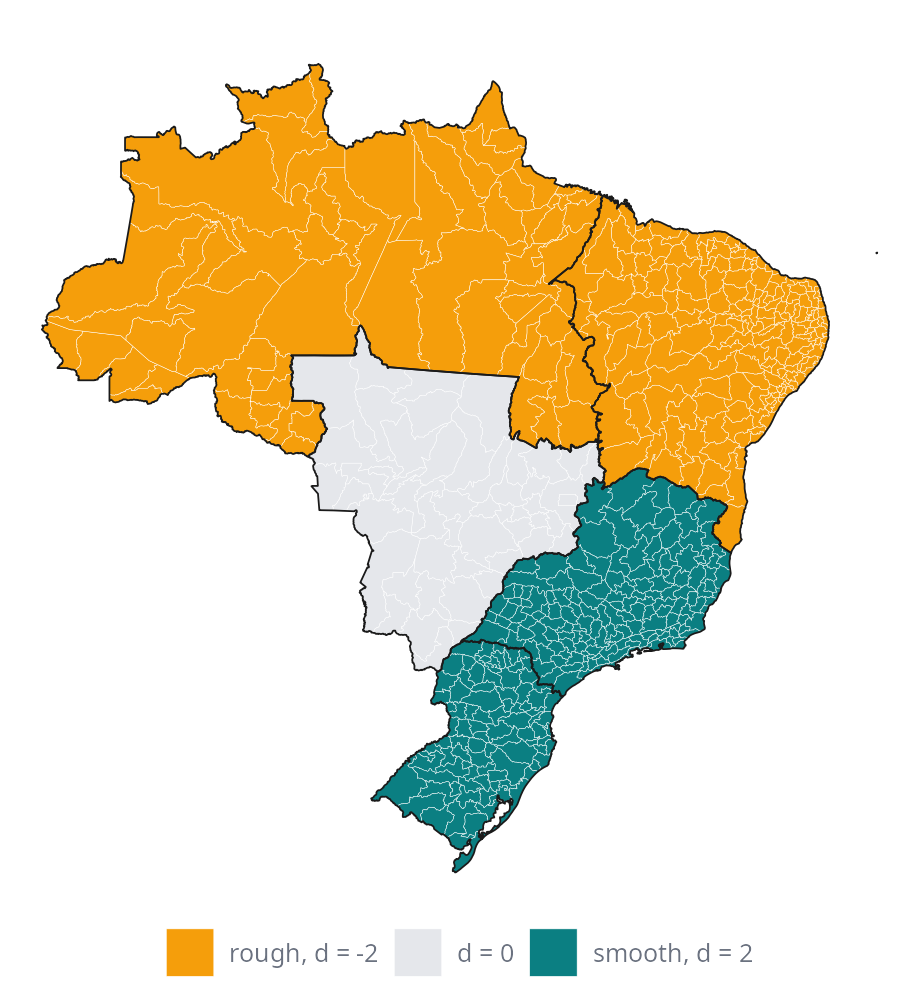
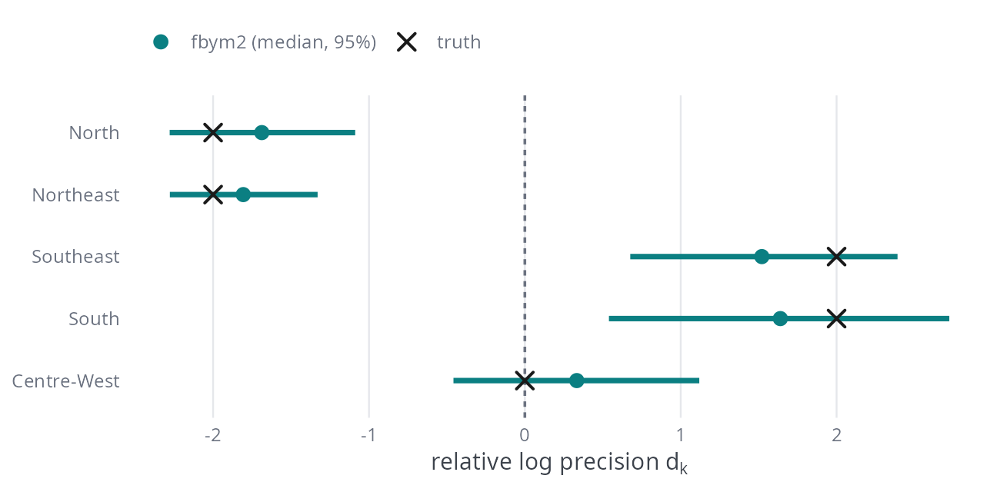
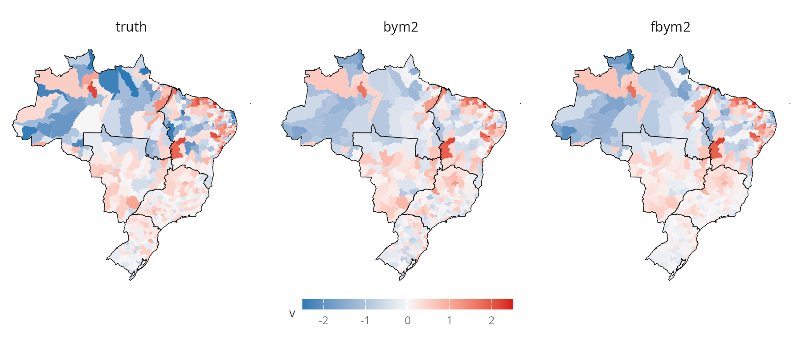
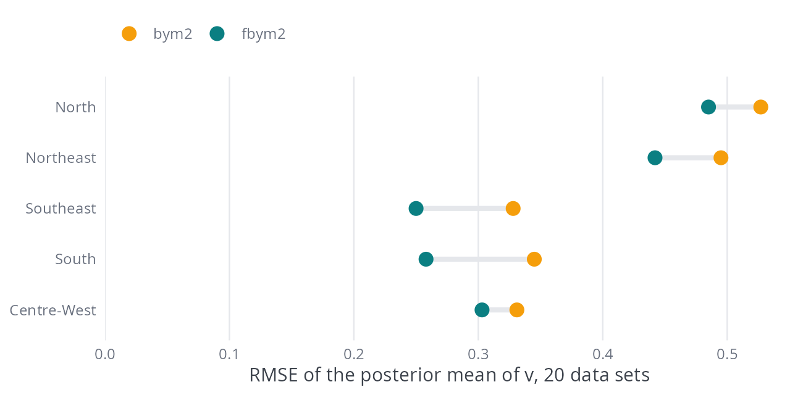

fbym2
A non-stationary spatial model with noise: a spatial part whose smoothness differs between sub-regions, plus noise of each area.
Idea
The effect of each area is a spatial part, shared with its neighbours, plus noise of its own. The spatial part is an fbesag field, so its smoothness differs between sub-regions. With the same smoothness everywhere it is the BYM2 model (Riebler et al., 2016), with the same priors, so comparing the two tests whether the map is non-stationary. When the sub-regions do not differ, the estimates are almost the same as BYM2's (see the check).
Model
| parameter | meaning |
|---|---|
| $\tau$ | precision of $v_i$ |
| $\phi$ | spatial share of the variance |
| $d_k$ | log precision of the spatial part in sub-region $k$, relative to the map: $d_k > 0$ smoother, $d_k < 0$ rougher |
As in INLA's bym2, the latent vector is $(\mathbf v, \mathbf u)$, of length $2n$:
Priors
$\boldsymbol\theta = (\log\tau,\ \text{logit}\,\phi,\ d_1, \dots, d_{P-1})$, reported as Theta1, Theta2, …; $d_P = -(d_1 + \dots + d_{P-1})$.
| parameter | prior | default | meaning |
|---|---|---|---|
| $\tau$ | PC | prec = c(1, 0.01) | $P(1/\sqrt\tau > 1) = 0.01$ |
| $\phi$ | PC of BYM2 | phi = c(0.5, 0.5) | $P(\phi < 0.5) = 0.5$ |
| $\mathbf d$ | $\mathcal N\big(\mathbf 0, \sigma_\gamma^2 (I - \tfrac1P J)\big)$ | sd_gamma = 0.2 | as in fbesag; $\sigma_\gamma \to 0$ gives bym2 |
Example: rough and smooth regions
Simulated on the 558 microregions of Brazil (brazil_558_microregions.RData), 5 expected cases each.

library(INLA)
library(gmrfs)
load("brazil_558_microregions.RData") # graph, map_df
region <- map_df$region_code # 1 North, 2 Northeast, 3 Southeast, 4 South, 5 Centre-West
m_regions <- fbym2(graph, id = region, sd_gamma = 1)
# theta = (log tau, logit phi, d_1, ..., d_4); d_5 = 0
set.seed(1)
v <- gmrf_sample(m_regions, theta = c(1, qlogis(0.8), -2, -2, 2, 2))[1:558]
E <- rep(5, 558)
d <- list(y = rpois(558, E * exp(v)), E = E, idx = 1:558)
fit_regions <- inla(y ~ 1 + f(idx, model = m_regions), family = "poisson", E = E, data = d)
fit_bym2 <- inla(y ~ 1 + f(idx, model = "bym2", graph = graph), family = "poisson", E = E, data = d)
round(fit_regions$summary.hyperpar[, c("mean", "0.025quant", "0.975quant")], 2)
fit_regions$mlik[2] - fit_bym2$mlik[2] # log Bayes factor for the regions mean 0.025quant 0.975quant
Theta1 for idx 0.87 0.52 1.22
Theta2 for idx 1.70 0.64 2.75
Theta3 for idx -1.68 -2.29 -1.07
Theta4 for idx -1.81 -2.29 -1.33
Theta5 for idx 1.52 0.66 2.39
Theta6 for idx 1.64 0.56 2.72
[1] 56.71699Regional deviations
set.seed(1)
th <- inla.hyperpar.sample(4000, fit_regions, intern = TRUE) # log tau, logit phi, d_1, ..., d_4
dk <- cbind(th[, 3:6], -rowSums(th[, 3:6])) # d_5 = -(d_1 + ... + d_4)
colnames(dk) <- c("North", "Northeast", "Southeast", "South", "Centre-West")
q <- apply(dk, 2, quantile, c(0.025, 0.5, 0.975))
round(q, 2)
library(ggplot2)
qd <- data.frame(region = colnames(q), lo = q[1, ], mid = q[2, ], hi = q[3, ])
ggplot(qd, aes(y = region, x = mid, xmin = lo, xmax = hi)) + geom_pointrange() + geom_vline(xintercept = 0) North Northeast Southeast South Centre-West
2.5% -2.28 -2.28 0.68 0.54 -0.46
50% -1.69 -1.81 1.52 1.64 0.33
97.5% -1.09 -1.33 2.39 2.72 1.12
Estimates
# error of the posterior mean of v, by region
rmse <- function(fit) sqrt(tapply((fit$summary.random$idx$mean[1:558] - v)^2, region, mean))
round(rbind(bym2 = rmse(fit_bym2), fbym2 = rmse(fit_regions)), 2)
map_df$truth <- v
map_df$bym2 <- fit_bym2$summary.random$idx$mean[1:558]
map_df$fbym2 <- fit_regions$summary.random$idx$mean[1:558]
ggplot(map_df) + geom_sf(aes(fill = fbym2), colour = NA) + scale_fill_gradient2() 1 2 3 4 5
bym2 0.72 0.59 0.34 0.35 0.36
fbym2 0.66 0.50 0.25 0.28 0.33
The two estimates differ by 0.11 to 0.16 on average, too little to see on this colour scale. With one spatial precision, bym2 smooths the North more than fbym2 and the Southeast and South less; its error is higher in every region.
Repeated: 20 data sets
20 simulated data sets for each truth: the example above, and no difference between the regions.

| truth | model | North | Northeast | Southeast | South | Centre-West | |
|---|---|---|---|---|---|---|---|
| regions differ | RMSE | bym2 | 0.527 | 0.495 | 0.328 | 0.345 | 0.331 |
| fbym2 | 0.485 | 0.442 | 0.250 | 0.258 | 0.303 | ||
| coverage | bym2 | 0.886 | 0.889 | 0.977 | 0.973 | 0.968 | |
| fbym2 | 0.928 | 0.946 | 0.959 | 0.953 | 0.937 | ||
| no difference, all $d_k = 0$ | RMSE | bym2 | 0.316 | 0.320 | 0.320 | 0.301 | 0.302 |
| fbym2 | 0.318 | 0.321 | 0.321 | 0.303 | 0.306 | ||
| coverage | bym2 | 0.949 | 0.945 | 0.945 | 0.941 | 0.957 | |
| fbym2 | 0.943 | 0.949 | 0.942 | 0.943 | 0.945 |
When the regions differ, fbym2 has the lower error in 16 to 20 of the 20 data sets in every region, and the log BF favours it in all 20 (38 to 74). When they do not, the two are almost the same (error at most 0.004 higher), and the log BF has median $-2.3$ and is at most 1.4.
Testing for non-stationarity
If you change the priors of fbym2, give bym2 the same hyper.
Beyond $\text{logit}\,\phi = 12$, INLA's bym2 prior is flat (improper) and fbym2's is the exact PC tail. If the posterior of $\phi$ reaches 1, compare with fbym2 with id = rep(1, n) instead of bym2.
Use in MCMC
| function | returns |
|---|---|
gmrf_Q(m_regions, theta) | the precision matrix of $(\mathbf v, \mathbf u)$ |
gmrf_log_prior(m_regions, theta) | the log prior of $\boldsymbol\theta$ |
gmrf_log_density(m_regions, x, theta) | $\log \pi(\mathbf v, \mathbf u \mid \boldsymbol\theta)$, with the sum-to-zero constraints |
gmrf_sample(m_regions, theta) | draws of $(\mathbf v, \mathbf u) \mid \boldsymbol\theta$ on the constraints |
Example: demo("fbym2_mcmc", package = "gmrfs").
References
- Abdul-Fattah, E., Krainski, E., Van Niekerk, J. and Rue, H. (2024). Non-stationary Bayesian spatial model for disease mapping based on sub-regions. Statistical Methods in Medical Research, 33(6), 1093–1111. doi:10.1177/09622802241244613
- Riebler, A., Sørbye, S. H., Simpson, D. and Rue, H. (2016). An intuitive Bayesian spatial model for disease mapping that accounts for scaling. Statistical Methods in Medical Research, 25, 1145–1165.
- Simpson, D., Rue, H., Riebler, A., Martins, T. G. and Sørbye, S. H. (2017). Penalising model component complexity: a principled, practical approach to constructing priors. Statistical Science, 32, 1–28.
- Sørbye, S. H. and Rue, H. (2014). Scaling intrinsic Gaussian Markov random field priors in spatial modelling. Spatial Statistics, 8, 39–51.